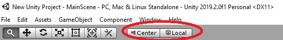

Unity Learn: Ryby's 2D RPG
Aluksi
Tänään ja huomenna tarkoitus on kokeilla Unity Learn-sivuston aloittelijoille tarkoitettua tutoriaalia. Tutoriaali on Unity Technologies tuotantoa ja edustaa siten virallista ohjelmointitapaa.
- Avaa tutoriaali täältä: https://learn.unity.com/project/ruby-s-2d-rpg
- Kirjaudu Unity-tunnuksillasi sivustolle jotta etenemisi tallentuu automaattisesti.
Osatehtävistä
1. Setting Up the Unity Editor
- Luo projekti C-asemalle tai muistitikulle.
- Uusi asia on Asset Storen käyttäminen ja valmiiden assettien importointi projektiin.
- avaa Asset Store, hae esim. ruby tutorial
- paina Import-napista, valitse Install/Upgrade
- paina lopuksi avautuneesta ikkunasta alhaalta Import
- [Nyt projekti hajoaa]
- Sulje Unity ja mene resurssinhallinnassa oikeaan kansioon, poista Packages -kansio ja käynnistä Unity uudestaan (luo json-tiedoston uudestaan ja nyt pitäisi toimia).
2. Main Character and First Script
- lisää uusi Scene ja nimeä se Main Scene
- tallenna Ruby.png koneellesi ja raahaa se Sprites-kansioon
- Raahaa Ruby.png Hierachy-ikkunaan jotta siitä syntyy GameObject
- Lisätään uusi kansio Scripts ja sitten uusi skripti RubyController.cs
- lisää Update()-metodiin koodirivit, tallenna
- Raahaa RubyController.cs Ruby:n uudeksi komponentiksi, kokeile toimintaa
3. Character Controller and Keyboard Input
- Lisätään hahmolle koodia jotta saadaan Ruby reagoimaan nuolinäppäimiin.
4. World Design - Tilemaps
- Tallenna aluksi Tile.png omalle koneellesi
- avaa Window / 2D / Tile Palette. (Tässä kohtaa saattaa olla, että asennuksesta ei löydy Tile-kohtaa. Lisää tämä Window / Package Manager -ikkunasta. Etsi 2D Tilemap Editor ja asenna se Install-painikkeella.)
- luo uusi paletti nimeltä GamePalette, tallenna Tiles-kansioon
- raahaa FirstTile GamePaletten sisälle
- Tässä kestää selvästi kauemmin kuin aiemmissa kohdissa
5. Decorating the World
- Tässä tulee vähän uutta asiaa
6. World Interactions - Blocking Movement
- Lisätään Rigidbody 2D Rubylle
- Ja toinen MetalBox-objektille
- Muutetaan BoxColliderin kokoa
7. World Interactions - Collectibles
- jos currentHealth antaa lopussa virheilmoituksen niin sinun täytyy käydä muuttamassa Rubyn currentHealth-muuttuja julkiseksi (lisää public-sana muuttujan alkuun).
8. World Interactions - Damage Zones and Enemies
9. Sprite Animation
- Jos Samples ei näy niin lisää se asetuksista oikealta ylänurkasta (Show Samples)
- Jos ja kun tulee virheilmoitus eikä ohjelma enää käänny niin animator on määrittelemättä. lisää RubyController.cs:n Start()-metodiin tämä rivi:
animator = GetComponent<Animator>();
10. World Interactions - Projectile
11. Camera - Cinemachine
12. Visual Styling - Particles
13. Visual Styling - UI - Head-Up Display
- Jos et saa pivot-palloa siirrettyä niin sinun tulee muuttaa
Center -> Pivot-asetukselle.
